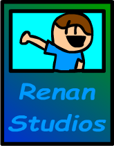
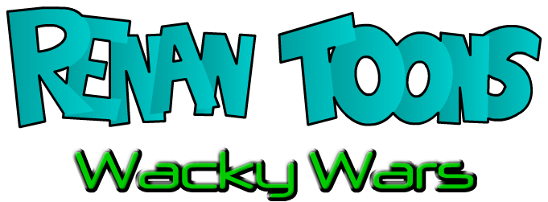

Pular

Renan
Studios

TOQUE PARA COMEÇAR
Qual é o seu nome?
Escolha como você vai aparecer para os outros jogadores.
Continuar
Renan Toons
Wacky
Wars
R
E
N
A
N
T
O
O
N
S
W
A
C
K
Y
W
A
R
S
!
Toons
Wacky
R
T
W
W
S
R
T
Modo
de Jogo
Um Jogador
Em breve
Multijogador
Galeria
Multijogador
Escolha o tipo de partida
Normal
Todos contra todos na mesma arena. Quem sobrar de pé vence.
Modo clássico
Torneio
Eliminatórias de 2 contra 2 até a final. Quem cai continua assistindo.
3 a 8 jogadores
2 vs 2
Duplas se enfrentam na mesma arena. A dupla que ficar de pé vence. Sem fogo amigo.
4 jogadores
◀ ▶ escolher · Enter confirmar · Esc voltar
◀ Voltar
Personagens
Galeria
◀
▶
◀ Voltar (Esc)
◀ Voltar
Multijogador
Criar Sala
Entrar
Criar Sala
Código da sala:
Iniciar Jogo
Entrar na Sala
WACKY
VS
SELEÇÃO DE PERSONAGEM
1/4 jogadores
Renanzinho
Aggie
Renan Antigo
Blui e Reddie
Doper
Hofy
FooshLooket
Dan
Em Breve
Em Breve
Em Breve
Em Breve
Em Breve
Em Breve
Em Breve
Em Breve
Em Breve
Em Breve
Em Breve
Pronto
Iniciar Jogo
Aguardando início...
🏆 CHAVE DO TORNEIO
Iniciar luta agora
Fechar chave
VS
👀 Assistindo · 🏆 Chave (B)
O host saiu
O torneio foi encerrado.
Voltar ao início
VITÓRIA!
1º
DEMONSTRAÇÃO
TOQUE OU PRESSIONE QUALQUER TECLA
VS
Lute!
K.O.!
Z
X